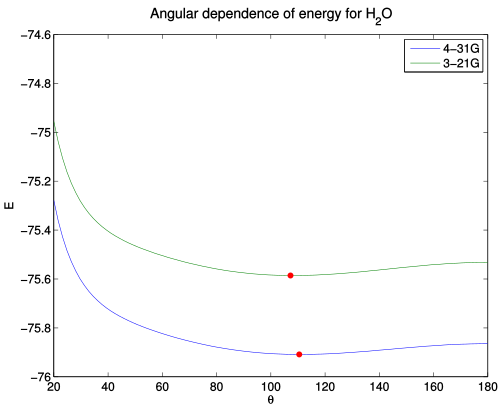
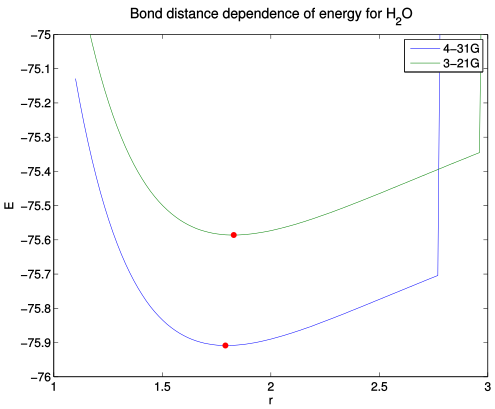
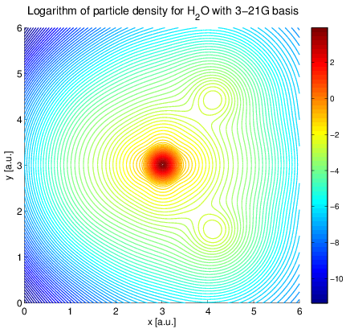
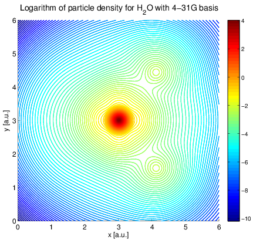
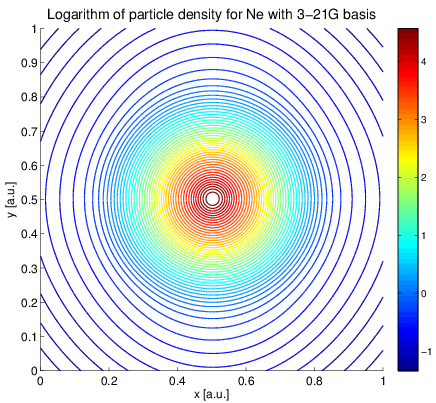
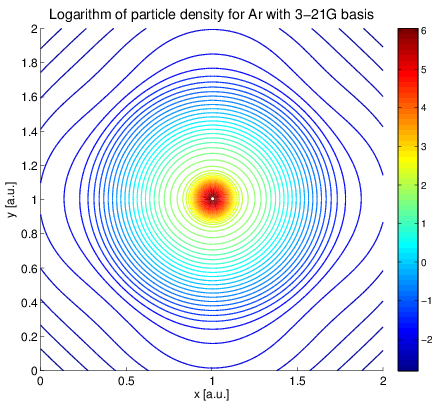
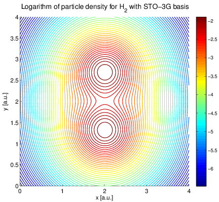
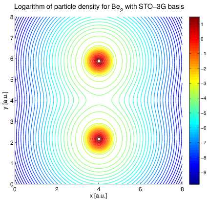

|
Hartree-Fock theory is about finding funcitons to minimize the Hartree-fock functional
\[ E[\Phi] = \sum_{\mu = 1}^N \langle \mu |h|\mu \rangle + \frac{1}{2} \sum_{\mu = 1}^N\sum_{\nu=1}^N \left[ \langle \mu\nu |\frac{1}{r_{ij}}| \mu\nu\rangle - \langle \mu\nu |\frac{1}{r_{ij}}| \nu\mu\rangle \right] \]Our aim is to minimize this funcitonal by finding the optimal basis funcitons $\mu, \nu$.
When we restrict ourselves to closed-shell systems only, the minimization problem can be written as:
\[ \mathbf{F} \mathbf{C}_k = \mathbf{\epsilon}_k\mathbf{S} \mathbf{C}_k \]This is a self-consistent equation that resembles a generalized eigenvalue problem. We solve it iteratively with a generalized eigenvalue solver.
Functions on the form
\[ G_a = G_{ikm}(a, \mathbf{r}_A) = x^i_A y^k_A z^m_A e^{-ar^2_A} \]have closed-form product integrals and are therefore favorable for integration-intensive methods.
To represent reasonable electron states, several gaussian primitives are contracted to create singel-particle states.
\[ \varphi_k = \sum_a c_{ka} G_a \]These are the functions to go into Roothans equation
The Fock matrix in Roothans equation requires us to calculate some integrals.
Tools for integral evaluations:
We are able to do calculations on closed shell systems.
He, Ne, Ar
H$_2$, Be$_2$
| System | Hydrogen-like | 3-21G | 4-31G | STO-3G | STO-6G | Exp |
|---|---|---|---|---|---|---|
| He | -2.83359 | - | - | -2.80778 | -2.84629 | -2.904 |
| Be | -14.515 | - | - | -14.3519 | -14.5034 | -14.67 |
| H$_2$ | - | - | - | -1.11671 | -1.12532 | -1.175 |
| Be$_2$ | - | - | - | -28.6988 | -29.0015 | -29.3385 |
| Ne | - | -127.804 | -128.356 | - | - | -128.9383 |
| Ar | - | -524.343 | - | - | - | -527.544 |
| H$_2$O | - | -75.5854 | -75.9074 | - | - | -76.438 |
|  |  |
Water
|  |  |
Noble gases
|  |  |
Diatomic molecules
|  |  |
I have developed and tested a Hartree-Fock code.
References: same as in my report